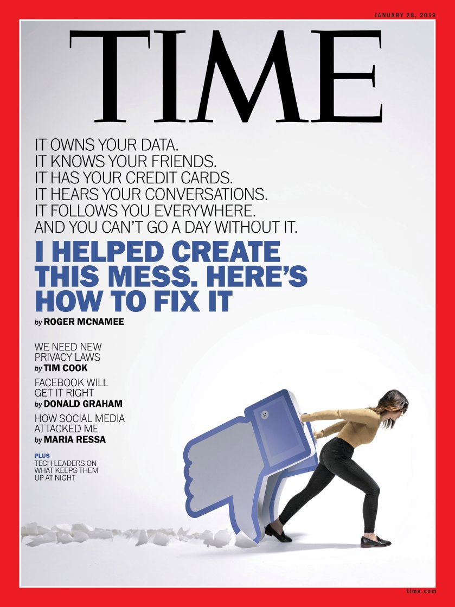
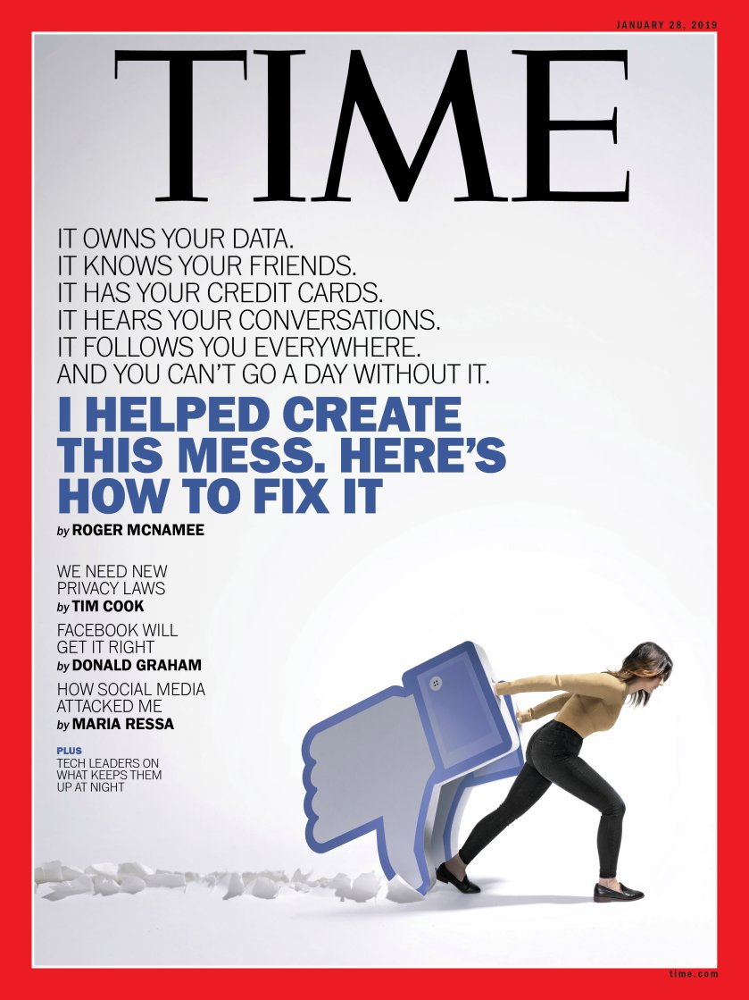

Lockdown Literature
Richard West
Make it interesting. Make it yours. That's the point - At their best books can articulate thoughts that have been swirling around in my head but I've never had the ability to communicate them and the final line of Ed Douglas' book does just that. What's the point of climbing? There's as good an answer as I've found: "Make it yours" whether that's a sandstone problem in an obscure Northumberland location or a visionary Himalayan quest. The essence of climbing for me is how we interpret the movement and make it interesting for our own bodies. That is why we end up grade chasing as the movements of a once impossible Font 5 now don't provoke the same interest as the 6C. This book caught me in a perfect moment during lockdown, Ed Douglas's prose are readable and thought provoking. The essays are short enough to read in a one sitting which is perfect for my information addled post covid brain. In eight reflective essays that touch topics I feel I should have considered as a climber but in honesty, never have. For example, I have trekked in Nepal and yet never really paid much heed to the underlying assumptions we bring as westerners to Nepal. Or, the oversimplifications we do when we categorise say Sherpa's as an ethnic group above others. Further, I had heard of Kurt Albert the father of the redpoint and reading Douglas's essay I felt energised by his enthusiasm for climbing and for lifelong learning. The ethical dilemma that Ueli Steck put the judges of the Piolet d'Or by not recording his ascent of Anapurna goes to the core of alpinism. I mean I can't imagine everyone being fine with Lance Armstrong just saying he had won all the Tours de France without anyone validating his win.
The Magician's Glass is a great read and took me on an emotional journey that climbing books rarely do - Shakespeare wrote that art should "hold a mirror up to nature" and Ed Douglas certainly achieves this. However Shakespeare only has a rating of 2.6 on goodreads so I'll leave that opinion to you.

 
